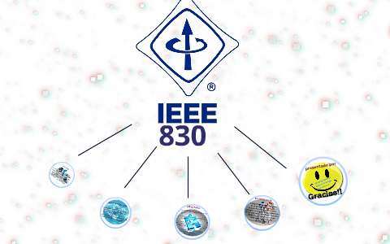
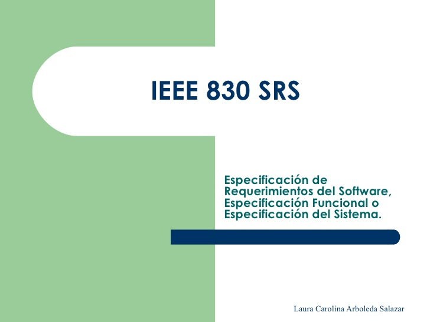
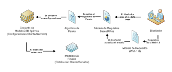
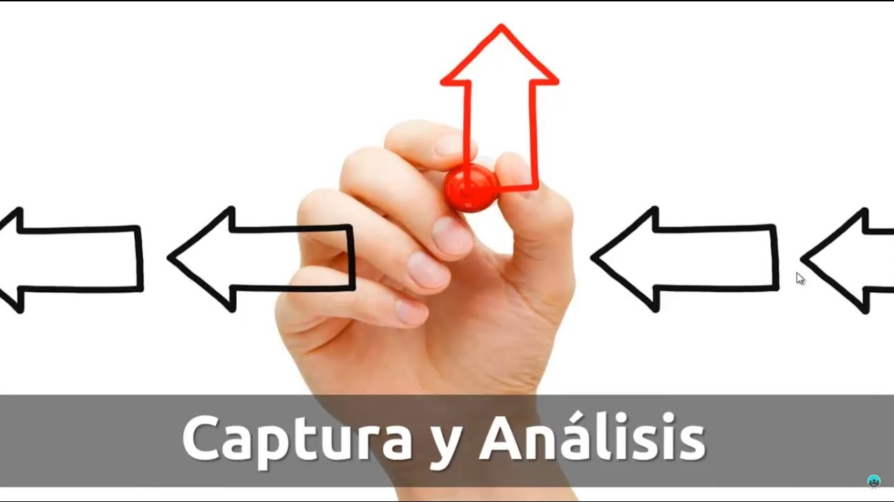

Estructura del documento de requisitos, estándar IEEE830.

Este POST presenta, el formato de especificaciones de requisitos de software (ERS) según la última versión del estándar IEEE 830. Según IEEE, un buen Documento de Requisitos, pese a no ser obligatorio que siga estrictamente la organización y el formato dados en el estándar 830, sí deberá incluir, de una forma o de otra, toda la información presentada en dicho estándar.
Requisitos Software(ERS). Consta de varias subsecciones:
Propósito,
Ámbito del sistema,
Definiciones,
Referencias,
Visión general del documento,
Descricion general

Este documento es una especificación de requisitos de software (ERS) para el sistema de información para gestión e proceso y control de inversiones. Esta especificación se a estructurado basándose en las directrices dadas por el estándar IEEE partica recomendada para especifícanos de requisitos de Software ANSI/IEEE 830
Restrinciones

Esta subsección describe aquellas sucesiones que se imponen sobre los desarrollos del producto
Políticas de empresa
Limitaciones del hardware
Interfaces con otras aplicaciones
Operaciones paralelas
Función de control
Lenguaje de programación
Consideración acerca de la seguridad
Funciones Del producto

En esta subsección de la ERS se mostrará un resumen, a grandes rasgos, de las funciones del futuro sistema.
Por ejemplo, en una ERS para un programa de contabilidad, esta subsección mostrará que el sistema soportará el mantenimiento de cuentas, mostrará el estado de las cuentas y facilitará la facturación, sin mencionar el enorme detalle que cada una de estas funciones requiere.
Las funciones deberán mostrarse de forma organizada, y pueden utilizarse gráficos, siempre y cuando dichos gráficos reflejen las relaciones entre funciones y no el diseño del sistema.
Funciones Del producto

En esta sección se describen todos aquellos factores que afectan al producto y a sus requisitos. No se describen los requisitos, sino su contexto. Esto permitirá definir con detalle los requisitos en la sección 3, haciendo que sean más fáciles de entender.
Normalmente, esta sección consta de las siguientes subsecciones: Perspectiva del producto, funciones del producto, características de los usuarios, restricciones, factores que se asumen y futuros requisitos.